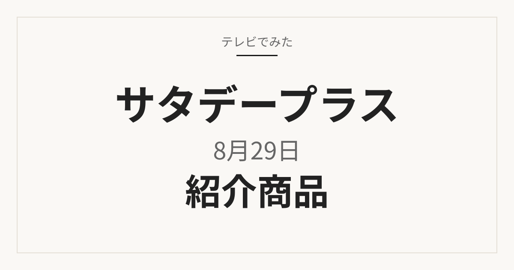

サタデープラス／王様のブランチ
チーズハンバーグ・セリア
サタプラのチーズハンバーグとセリア、ブランチの買い物の達人。
この日の商品を見る
テレビ紹介商品の記録メディア
テレビで気になったもの、ここで見つかる。
「この前テレビで見たのに、名前を忘れちゃった…」そんな商品を、放送日と番組名からすぐに探せます。
新しい放送から
放送日が新しい順

サタデープラス／王様のブランチ
サタプラのチーズハンバーグとセリア、ブランチの買い物の達人。
この日の商品を見る

大阪ほんわかテレビ
ハネぴた、シリコントレーなど、番組で紹介された便利グッズ。
この日の商品を見る

サタデープラス
ニシキヤ、無印、ハウスなど、紹介されたレトルトカレー。
この日の商品を見る

マツコの知らない世界
番組で紹介された乾麺を、確認できた範囲でまとめています。
この日の商品を見る

マツコの知らない世界
番組で紹介された冷凍パンを、確認できた範囲でまとめています。
この日の商品を見る
探し方
商品名を忘れても、見た番組か放送日が分かればたどり着けます。上のカードは日付・番組名・テーマの順に揃えています。
テレビ番組で紹介された商品です。番組公式などで確認できたものだけを、放送日ごとにまとめています。
各放送日の記事に、確認できた商品の販売ページへのリンクを置いています。トップページからは日付の一覧へ進んでください。
このサイトについて
「テレビでみた」は、在宅ワークと家事を両立する主婦の目線をベースに、番組で紹介された商品を放送日・番組名から探しやすく整理するメディアです。
商品名や放送内容は番組公式・メーカー公式などで確認し、まだ確認できない情報は推測で断定しません。
編集方針と確認方法を見る